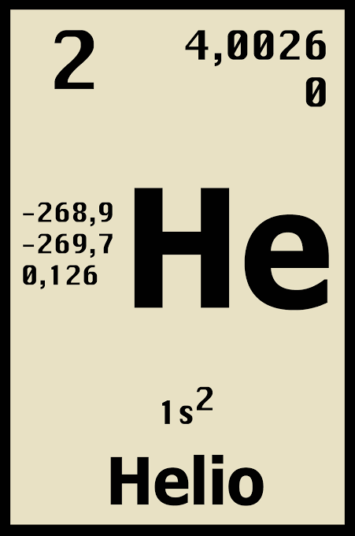

HELIO
PANTALLA PRNCIPAL
El helio es un elemento quimico de numero atomico 2 y simbolo He, clasificado como un gas noble en la tabla periodica.
Caracteristicas Principales
- Es un gas incoloro, inodoro, e insipido
- Es el segundo elemento mas abundante en el universo, pero muy escaso en la atmosfera terrestre.
- Tiene el punto de ebullicion mas bajo de todas las sustancias conocidas.
- Es quimicamente inerte y no inflamable
Aplicaciones
- Medicina: Es indispensable como helio liquido para enfriar los imanes superconductores de los equipos de resonancia magnetica.
- Industria y Tecnologia: Se usa como gas protector en soldaduras, para detectar fugas microscopicas y en la fabricacion de semiconductores.
- Aeroespacial: Se emplea para la limpieza de motores de cohetes y presurizacion de tanques de combustible.
- Vida cotidiana: S e utiliza para inflar globos debido a su baja densidad y ligereza

PANTALLA PRNCIPAL